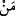

35. De ki: “Sizin ortak koştuklarınızdan gerçeğe götürecek var mı?” De ki:
“Gerçeğe götüren Allah’tır. Gerçeğe götüren mi uyulmaya daha lâyıktır, yoksa
hidâyet verilmedikçe kendi kendine doğru yolu bulamayan mı?” O halde neyiniz
var! Nasıl hükmediyorsunuz?
“De ki: “Sizin ortak koştuklarınızdan” hangi yolla olursa olsun başkalarını
“gerçeğe götürecek var mı?” Çünkü kulluğun en aşağı mertebesi, ma’bûdun kullarını
kendileri için uygun ve elverişli olana iletmesidir.
“De ki:” Çeşitli deliller gösterip peygamberler göndererek kitaplar indirip sağlam,
doğru bir akıl yürütmeye, isâbetli düşünmeye muvaffak kılarak dilediklerini “gerçeğe
götüren” başkası değil, sadece “Allah’tır.” Çünkü akıllar farklı farklı, düşünceler ise
çeşit çeşittir. Gerçeği belirlemek de pek zordur. Yanlışa düşmekten ancak pek az insan
kurtulur. Gerçekleri kavramaya yol bulmak ise sadece Allah’ın yardımı, yol göstermesi
ve hidâyet etmesiyle mümkün olur.
Başkalarını “gerçeğe götüren” Allah “mı” gerçeğe götürmeyenden “uyulmaya daha
lâyıktır, yoksa hidâyet verilmedikçe” Allah Teâlâ kendisini doğru yola iletmedikçe
“kendi kendine” hiçbir durumda “doğru yolu bulamayan mı?”
Eğer: “Putlar, cansız varlıklar oldukları için hidâyeti kabul etmezler. Bu durumda
putlar için nasıl “hidâyet verilmedikçe” denilebilir? Yine âyetteki (  ) harfi cansızlar
için değil, canlılar için kullanılır. Böyle olunca da putlar hakkında “kendi kendine
doğru yolu bulamayan mı?” demek uygun olur mu?” diye sorarsan şöyle cevap veririm:
Bu durum, yani “hidâyet verilmedikçe doğru yolu bulamama”, melekler, Mesih ve
Uzeyr (aleyhimü’s-selâm) gibi Allah’a ortak koştukları şeylerin değerli olanları için söz
konusudur. Bu sebepledir ki bu ifade, doğru yola götürülmeyi kabûl eden, buna istîdâdı
olan akıllı varlıkları rab edinen kimselerin tuttuğu yolun bozukluğunu beyân etmektedir.
Putlara ve başka varlıklara tapan şirk ehlinin tuttuğu yolun bozuk olduğu ise yukarıdaki:
“De ki: “Sizin koştuğunuz ortaklardan ilk defa yaratacak.... var mı?” âyeti ile
açıklanmıştı. Çünkü buradaki “ortaklardan” maksadın putlar ve başka bir takım
varlıklar olduğunda şüphe yoktur.
et-Tibyân’da denilir ki: Put, doğru yola götürülmedikçe yani bir yere sokulup
çıkarılmadıkça, taşınmadıkça, kendisi ile ilgili bir tasarrufta bulunulmadıkça ne bir
fayda ne de bir zarar verir. Kendi başına hiçbir şey yapamaz. Allah Teâlâ ise böyle bir
durumdan münezzehtir.
Bu söz, zâhiri itibariyle putların doğru yola götürüldükleri takdirde gideceklerini
gösteriyorsa da durum böyle değildir. Çünkü bu putlar doğru yolu bulamayacak olan
taşlardır. Ne var ki müşrikler bunları ilâh edinince bunlardan da akıl sâhibi, bir şeyler
yapabilen varlıklar gibi bahsedilmiştir.
“O halde neyiniz var!” Yani, size ne oluyor da bunları Allah Teâlâ’ya ortak
koşuyorsunuz?! Aklın, bâtıl olduğuna açıkça hükmettiği bir şeye “nasıl
hükmediyorsunuz?” Bu ifade müşriklerin verdikleri bâtıl hükmü reddetmektedir. Çünkü
onlar kendisine muhtaç oldukları Allah ile kendilerine muhtaç olan putları eşit